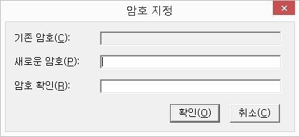

작업하고 있는 문서를 종료하고 새로운 문서를 작성할 수 있도록 합니다.
센스 주소록에서 새로운 문서를 만든다는 것은, 기록할 항목들의 구조를 생성하는 디자인 작업에 들어감을 의미합니다. 따라서 작업창이 디자인 창으로 바뀌게 됩니다.
디자인 방법에 대한 자세한 내용은 '디자인 창 사용'을 참고해 주시기 바랍니다.
* 센스 주소록을 처음 실행하거나 자동 문서 열기가 실행되지 않아 열기할 문서가 없는 경우에는 자동으로 새로 만들기가 실행됩니다.
기존에 저장되어 있는 센스 주소록 파일을 엽니다.
열기 기능을 실행하면 '열기' 대화상자가 출력됩니다. 센스 주소록에서는 센스 주소록 파일(*.XAD)과 CSV파일(*.CSV)을 불러올 수 있습니다. 파일 형식의 기본 확장자는 '*.XAD'입니다.
데이터 파일을 열 때 문서에 암호가 지정되어 있으면 암호 입력을 요구합니다. 암호가 올바르게 입력되지 않으면 문서를 열 수 없습니다.
문서 열기에 성공하면 내용을 살펴볼 수 있는 기본 작업 상태로 들어갑니다.
만일 문서에 레코드가 존재하지 않는 경우, 데이터 입력을 할 것인지를 물어보며 여기에서 '예'버튼을 누르면 데이터 편집 상태로 들어갑니다.
CSV파일을 불러온 경우에는 각 필드의 이름을 '필드1', '필드2', '필드3' ... 등으로 표시하며, 모든 필드의 형식을 '문자열' 형식으로 하여 레코드 구조를 자동으로 생성합니다. 따라서 이 경우에는 '디자인 작업'을 통해 원하는 형태로 구조를 수정하는 것이 좋습니다.
* CSV파일은 콤마 기호(,)나 Tab 문자 등의 구분기호를 사용해 데이터를 표시하는 원시적인 파일 형태입니다. 엑셀이나 윈도우즈 주소록에서도 CSV파일을 지원함으로 센스 주소록과 데이터 공유가 가능합니다.
변경된 내용을 디스크에 파일로 저장합니다.
기존에 저장되었던 문서의 경우 기존 문서를 덮어씌웁니다. 반면 새로 만들어진 문서일 경우에는 '다른 이름으로 저장' 대화상자가 나타나 저장할 문서의 위치 및 이름을 지정하도록 합니다.
'다른 이름으로 저장' 대화상자에서는 CSV파일과 XAD파일의 두 가지 형태로 저장할 수 있으며, 기본 파일형식은 XAD파일입니다.
현재 열려져 있는 문서를 다른 이름으로 저장합니다.
현재 파일을 다른 이름으로 하나 더 만들거나 파일형식을 바꾸고자 할 때 사용합니다.
XAD 파일을 CSV 파일 형식으로 변환하는 방법
① 센스 주소록을 실행하고 변환을 원하는 XAD 파일을 엽니다.
② [파일] -> [다른 이름으로 저장] 메뉴를 선택하여 대화상자를 엽니다.
③ <파일 형식> 콤보상자에서 방향키를 이용하여 'CSV 파일' 항목에 맞춥니다.
④ '저장' 버튼을 누릅니다. 해당 폴더에 CSV 파일이 만들어져 있습니다.
'구조 저장' 기능을 통해 기존에 저장해 두었던 구조를 디자인 작업시에 불러와 적용합니다.
기능을 실행하면 '구조 열기' 대화상자가 나타나며 여기서 원하는 구조를 선택한 후, '확인' 버튼을 누르면 그 구조데로 디자인 작업이 이루어집니다.
* 이 기능은 디자인 작업에서 등록된 필드가 없는 경우에만 동작합니다.
현재 문서의 데이터 구조를 저장합니다.
자주 사용하는 데이터 구조를 저장해 두는 기능입니다. 저장된 구조는 디자인 작업시 '구조 열기' 기능을 통해 불러올 수 있습니다.
'이름' 편집창에 저장될 구조에 이름을 입력합니다.
센스 주소록에서 작업했던 최근 파일 목록을 표시합니다.
최근 파일 목록은 [파일] 메뉴의 하위 메뉴 형태로 하단에 출력되며, 총 4개까지의 최근 작업 파일을 표시합니다.
파일에 암호를 지정하거나 등록되어 있는 암호를 수정, 삭제합니다.
파일에 암호를 등록하면 파일을 열 때 암호를 묻고, 암호가 일치할 경우에만 파일을 열 수 있습니다.
1. 암호 지정

① '새로운 암호' 편집창에 지정할 암호를 입력합니다.
② '암호 확인' 편집창에 지정한 암호를 다시 입력합니다.
③ '확인' 버튼을 누릅니다.
* 새로운 암호와 암호 확인 편집창에 입력한 암호가 같아야 암호로 등록할 수 있습니다.
2. 암호 변경
① '기존 암호' 편집창에 현재 등록되어 있는 암호를 입력합니다.
② '새로운 암호' 편집창에 변경할 암호를 입력합니다.
③ '암호 확인' 편집창에 변경할 암호를 다시 한 번 입력합니다.
④ '확인' 버튼을 누릅니다.
* 기존 암호가 잘못 입력되었거나, 새로운 암호와 암호 확인란에 입력된 암호가 일치하지 않으면 암호가 변경되지 않습니다.
3. 암호 삭제
① '기존 암호' 편집창에 현재의 암호를 입력합니다.
② <새로운 암호>와 '암호 확인' 편집창을 비워둔 채로 '확인' 버튼을 누릅니다.
③ "설정된 암호를 제거 하시겠습니까?"라는 '질문' 대화상자가 나타나며 여기서 '예' 버튼을 누르면 암호가 삭제됩니다.